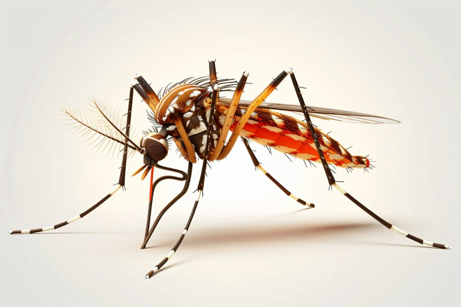

DBD Post Maker Ranking Dashboard
Ringkasan pemantauan penyebar informasi DBD di X (Twitter), 2021 – 2025

Tren Tweet Bulanan
Distribusi Sentimen
Sesuai filter dashboard
Klik irisan atau label sentimen untuk melihat tweet dengan sentimen tersebut. Daftar mengikuti filter tahun, bulan, tipe profil, dan lokasi aktif.
Top 5 Contributor
Persebaran Penerbit Postingan Di Indonesia
Pilih salah satu daerah untuk filter berdasarkan lokasi. Filter ini bertindak secara global.
Ranking per Kabupaten / Kota
Pola Musiman
Jumlah post per tahun dan bulan, sesuai filter yang berlaku. Kotak hitam = periode terpilih.
Penyebar Berita DBD
Data tweet sampai: